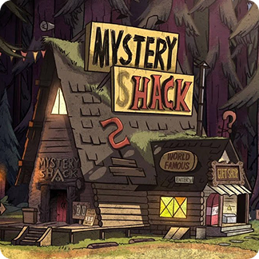
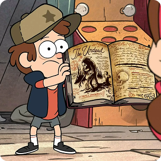
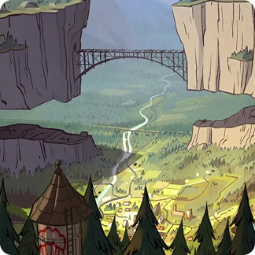
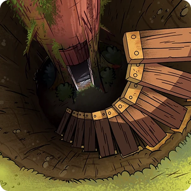

Хижина Чудес — не просто лавка сувениров. Это портал в мир тайн, скрытый в лесах Гравити Фолз. За её дверями, под присмотром загадочного дяди Стэна, хранятся невероятные артефакты, от говорящего диктофона до порталов в иные измерения. Для Диппера и Мэйбл Пайнс это место стало домом и отправной точкой для самых невероятных приключений. Здесь каждая безделушка — часть головоломки, а главное чудо — это смелость искать правду, какой бы странной она ни была. Загляни — если готов разгадывать загадки.

Книги в «Гравити Фолз» — это не просто дневники, а ключи ко всем тайнам города. Легендарные Дневники были созданы загадочным автором и содержат исчерпывающие исследования паранормальных явлений города. В самой первой серии, спасаясь от гномов в лесу, Диппер упал в дупло старого дерева. Там он и обнаружил Дневник №3 — самый полный из сохранившихся томов. Эта книга с символом «шестипалой руки» на обложке мгновенно стала его главным проводником в мире загадок Гравити Фолз. Она не только объясняла странности, но и предупреждала об опасностях, ведя Диппера к главной тайне — автору дневников.

В «Гравити Фолз» есть загадочный разлом в горе, местные жители не обращают на него внимание и принимают за редкий геологический феномен. Совсем скоро Диппер узнает шокирующую правду. Всё лето близнецов превратится в гонку со временем, чтобы предотвратить катастрофу, о которой никто, кроме них, даже не догадывается.

Загадочный дневник, найденный Диппером в лесу, привёл его к описанию засекреченного бункера. Охваченный желанием раскрыть личность таинственного автора, Диппер собирает команду друзей для рискованной экспедиции. Оказалось, что это не просто убежище, а настоящая лаборатория, где предыдущий охотник за аномалиями ставил свои самые опасные опыты. Благодаря смекалке Венди ребята проникают внутрь, где обнаруживают огромные запасы провизии и... того, кого Диппер счёл автором дневников. Но их ждёт роковая ошибка, и впереди — суровые испытания, к которым они совершенно не готовы.